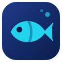

Xianyu Buddy
Preço em reais, reputação do vendedor, alerta de réplica, tradução e atalhos de agentes no Xianyu/Goofish.
- Clique em Instalar na Chrome Web Store e depois em Usar no Chrome.
- Volte para esta página e deixe-a aberta até aparecer Pronto!